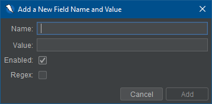

Form işleyici uzantısı, alan adlarına dayalı formlarda kullanılan değerlerin özel olarak yapılandırılmasına izin verir.
With this add-on the user can create new fields for fields that they wish to set the value of. Additionally, the user can modify any existing field's name and value to fit the fields that they are trying to set. Herhangi bir alan kullanıcı tarafından silinebilir ya da devre dışı bırakılabilir. Böylece özel değerler kullanılmaz. Field names, values, enabled, and regex status will be stored even after a ZAP session has concluded.
Eklenti, bir formda bulunabilecek ve her varsayılan alana karşılık gelen bir değer olan bir dizi varsayılan alan adları sağlar. Kullanıcı arzu ederse varsayılan değerler, devre dışı bırakılabilir, değiştirilebilir ve silinebilir.
Form İşleyici Seçenekler'de bulunabilir. Form İşleyici sekmesinin seçilmesi, şu anda tanımlanmış tüm varolan değerleri içeren bir tablo görüntüler. Aşağıda bir örnek gösterilmiştir.

Ek alan değerleri tanımlamak için Ekle butonuna tıklanabilir. Bu, kullanıcının alan bilgisi girebilmesi için bir pencere açar.
Yeni bir alan eklerken lütfen aşağıdakileri dikkate alın:
Uzantı kullanıcıların var olan alanların değerlerini ve adlarını değiştirmesine izin verir. Bu değiştirmek istediğiniz alanı seçip değiştir butonuna tıklanarak yapılabilir.

Bir alanı değiştirirken kullanıcı yeni bir tane oluşturmak için aynı kurallarla sınırlandırılmıştır. Bir alanı değiştirirken en yaygın sınırlandırma, isim var olan bir alanla aynı olamaz. (yani çoğaltma alanı yok)
Kullanıcı her zaman alanları kaldırabilir. Bunu yapmak için sadece kaldırmak istediğiniz alanı seçin ve Kaldır butonuna basın. Onay Olmadan Kaldır kutusu işaretlenmedikçe, devam etmeden önce kaldırma işlemini onaylamanız istenir.
Bir kullanıcı, bir formdaki her alanı tanımlamak istemediğini ancak formda bir kaç seçimi tanımlamak istediği kararına varabilir.
Form işleyicisi eklentisinde tanımlanmamış herhangi bir alan, her bir alan türüne uyacak şekilde oluşturulmuş bir ZAP varsayılan değerini kullanır(Örnek: Bir metin belgesi ''ZAP'' değerine sahip olacaktır)
A number of statistics are exposed via the add-on for add, modify, and remove operations.
In the following examples {name} will be the actual name of the Form Handler field.